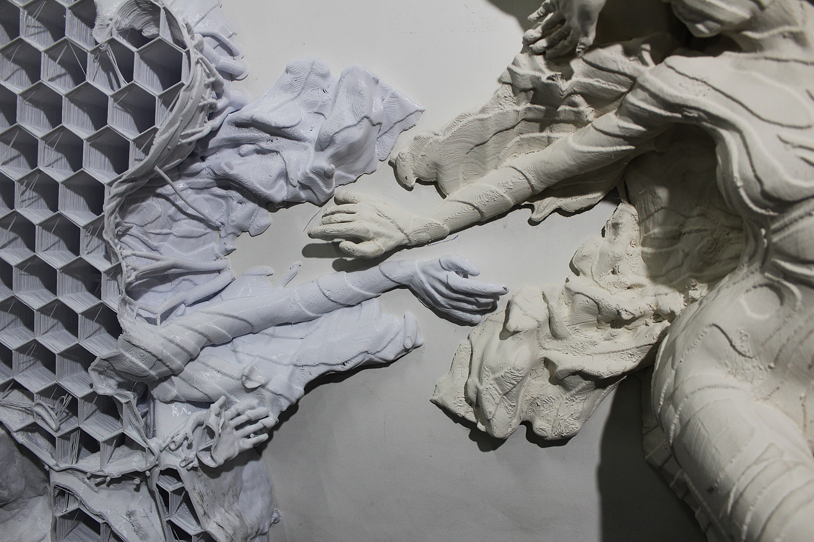
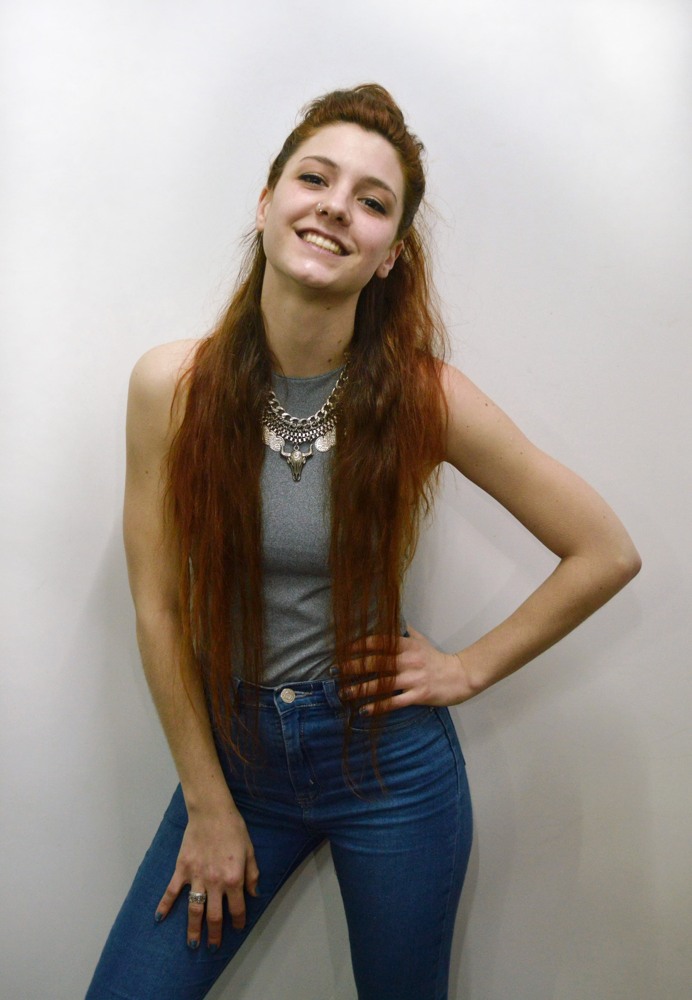

Obras
Se dice que las ninfas reflejan el paisaje que las rodea. Pero ¿qué forma adoptan cuando ese paisaje se transforma?
En estas esculturas, las ninfas se desprenden del imaginario antiguo para devenir cuerpos híbridos: presencias que emergen allí donde naturaleza y tecnología se entrelazan.
Surgen así entidades persistentes, donde mito, materia y técnica contemporánea exploran nuevas formas de vinculación.

Denise Di Federico
Argentina, 1993. Vive y trabaja en Buenos Aires.
Es Licenciada en Artes Visuales y escultora por la Universidad del Museo Social Argentino (UMSA, 2016), donde se desempeñó como profesora adjunta de Escultura en 3° y 4° año.
Complementó su formación con la Diplomatura en Diseño e Impresión 3D en la Universidad Tecnológica Nacional (UTN), especializándose en tecnologías 4.0 aplicadas a procesos escultóricos. Desde 2018 desarrolla investigación y práctica en fabricación aditiva y digitalización, aplicadas a conservación y patrimonio, arte,
En el 2025 asistió a la clínica de obra de Fundación Cazadores, coordinada por Leila Tschopp, y ha estudiado con artistas como Juan José Cano, Gerardo Pietrapertosa y Enrique Dartiguepeyrou en los talleres del Teatro Colón.
Participó en exposiciones colectivas como La Material del Mundo, en Fundación Cazadores, curada por Leila Tschopp (2026) y Encuentro desde las raíces en el Centro Municipal de Arte (CMA), junto a la Asociación Argentina de Artistas Escultores (2024).
Realizó su primera exposición individual en Espacio y Lugar Cultural en 2016.
Muestras y emplazamientos
-
2026
La Material del Mundo, curaduria de Leila Tschopp
Fundación Cazadores
-
2024
Bienal Internacional de Escultura del Chaco
Domo del Centenario, Resistencia, Chaco
-
2024
Encuentro desde las Raíces
Centro Municipal de Arte (CMA), Buenos Aires
-
2016
Primera Exposición Individual
Espacio y Lugar Cultural, Buenos Aires
Docencia
-
Profesora Adjunta de Escultura
UMSA, 3° y 4° año